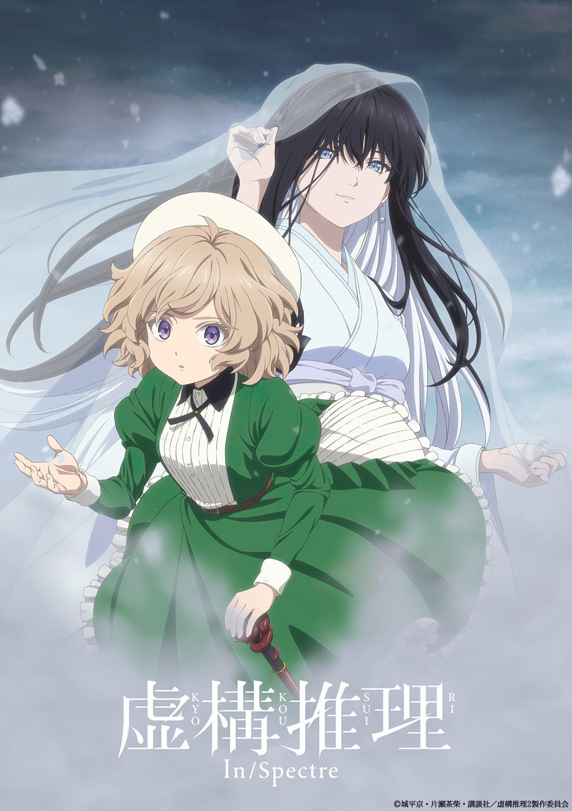

La segunda temporada de Kyokou Suiri revela un nuevo video promocional
Durante el un panel llevado a cabo en el evento Anime Expo, se compartió un nuevo video promocional para la segunda temporada de la adaptación al anime de las novelas ligeras escritas por Kyo Shirodaira e ilustradas por Chasiba Katase, Kyokou Suiri (In/Spectre). La serie se estrenará en enero de 2023.
También se reveló que los actores de voz Aoi Yuuki y Makoto Furukawa se unirán al elenco de voces de la serie para interpretar a los personajes Yuki Onna y Muroi, respectivamente.
Kyo Shirodaira comenzó la publicación de las novelas ligeras con ilustraciones de Hiro Kiyohara en el año 2011 a través del sello editorial Kodansha Novels, posteriormente se mudó al sello Kodansha Taiga, en donde comenzó a utilizar las ilustraciones de Chasiba Katase. La editorial Kodansha ha publicado hasta la fecha un total de cuatro volúmenes. La primera temporada de doce episodios se emitió en la temporada de Invierno-2020 (Enero-Marzo), siendo distribuida por Crunchyroll en Occidente.
Sinopsis de Kyokou Suiri
Ocultos a plena vista, los espíritus conocidos como youkai habitan el mundo. Aunque la mayoría son benignos, un subconjunto amenaza la tenue paz entre los youkai y la humanidad. Desde que aceptó convertirse en su “Dios de la Sabiduría”, Kotoko Iwanaga ha servido como mediadora entre los dos reinos, resolviendo cualquier problema sobrenatural que se le presente. En un hospital local, Kotoko se acerca a Kurou Sakuragawa, un estudiante universitario cuya relación de larga duración terminó con una desafortunada ruptura. Kotoko alberga sentimientos por él y sospecha que algo sobrenatural se esconde dentro de su inofensiva apariencia, por lo que le pide a Kurou su ayuda para ayudar a los youkai.
Dos años más tarde, la noticia de una idol que murió accidentalmente aplastada por unas vigas de acero inunda la prensa. Sin embargo, meses después, los avistamientos comienzan a hablar de una mujer sin rostro que empuña una viga de acero. Como ocurre con cualquier problema sobrenatural, Kotoko y su compañero se proponen impedir que este espíritu cause estragos, pero este caso puede resultar mucho más siniestro y personal de lo que podrían haber pensado.